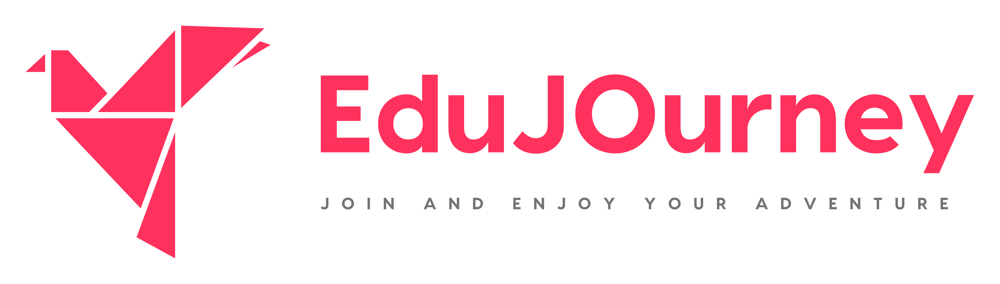

|
Chenxin Li | 李宸鑫
Hi! I'm Chenxin "Jason" Li, a final-year Ph.D. candidate at The Chinese University of Hong Kong (CUHK).
I work on multimodal LLM, reasoning/agent via RL, and world model.
I am currently interning at ByteDance Seed, scaling VLM via reasoning/agentic RL.
I built hands-on experience in (i) scaling multimodal models (data, architecture, training, benchmarking) and (ii) post-training via RL (reasoning, multi-turn agent, reward modeling and shaping). Previously, I did internships at Tencent AI, Ant Ling
and Hedra AI etc.
and research visits with UT Austin and UMD.
I anticipate graduating in the summer of 2026 and am interested in industrial positions (Profile). Please feel free to reach out via email (chenxinli@link.cuhk.edu.hk) or WeChat (jasonchenxinli).
LinkedIn |
Scholar |
GitHub |
X
|
|
Selected Publications
* Equal contribution, † Project Leader, ‡ Corresponding author
|
|
|
JarvisArt: Liberating Human Artistic Creativity via an Intelligent Photo Retouching Agent
Yunlong Lin, Zixu Lin, Kunjie Lin, Jinbin Bai, Panwang Pan, Chenxin Li, Haoyu Chen, Zhongdao Wang, Xinghao Ding†, Wenbo Li, Shuicheng Yan†
Preprint 2025
[Project] [Paper] [Code]
VLM-powered agentic photo retouching system that orchestrates expert models for professional-grade image editing.
|
Selected Experience
Internship on (i) scaling multimodal models and (ii) RL post-training (reasoning, agents, reward modeling) on 1k~10k scale GPU clusters:
- ByteDance Seed: VLM scaling via reasoning/agentic RL
- Tencent AI: World model simulation via Blender agent
- Ant Ling: Long-context memory RL, hallucination verifiers
- Hedra AI: Omnimodal (audio, image, pose) injection for video generation
|

|
ScholaGO (Co-founder): LLM-backend Education Startup
Co-founded ScholaGO Education Technology Company Limited (学旅通教育科技有限公司) to build LLM-powered education products that turn static content into immersive, interactive, multimodal learning experiences. Grateful to receiving funding from HKSTP, HK Tech 300, and Alibaba Cloud.
|
|
Professional Activities
- Workshop Organizer: AIM-FM: Advancements In Foundation Models Towards Intelligent Agents (NeurIPS 2024)
- Talks: "UKAN" at VALSE Summit (Jun 2025) and DAMTP, University of Cambridge (Jul 2024)
- Conference Reviewer: ICLR, NeurIPS, ICML, CVPR, ICCV, ECCV, EMNLP, AAAI, ACM MM, MICCAI, BIBM
- Journal Reviewer: Nature Machine Intelligence, PAMI, TIP, DMLR, PR, TNNLS
|
Beyond Work
Reading: I dedicate substantial time to reading, especially history, philosophy, and sociology, which shapes my perspective on what AGI should be from first principles.
Investment: Investment is real-world RL: returns provide fast feedback to iteratively improve individual decision policy. Recently, I am fascinated by the idea that how to (i) build benchmarks for LLMs that quantify real-world investment utility (in the similar spirit of GPT-5.2's gdpeval benchmark), and (ii) extending quantitative financial metrics to more general event and trend forecasting.
|
|